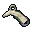
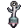
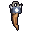

三つの貝殻
あとから供えられた貝殻。三つ、並んでいた。
違う遺品を、二つ・四つ・六つ持っていると効く（持っているあいだ）
夜目。深淵の中で、灯りの先まで見える。声がたまるのも遅くなる。
足音の警告。近くの深淵の敵が来ると、足もとで鈴が鳴る。
軽い足。深淵の中では、跳ぶと少し高く跳べる。
天と淵のあいだ WIKI
護符・護石・章・遺物など、アクセサリースロットに付ける品 50 点。
アクセサリーは、持ち物の画面の「アクセサリー」のスロットに付けたときだけ効きます。
三つの貝殻
あとから供えられた貝殻。三つ、並んでいた。
違う遺品を、二つ・四つ・六つ持っていると効く（持っているあいだ）
夜目。深淵の中で、灯りの先まで見える。声がたまるのも遅くなる。
足音の警告。近くの深淵の敵が来ると、足もとで鈴が鳴る。
軽い足。深淵の中では、跳ぶと少し高く跳べる。
上を向いた塩
塩に覆われた形の欠片。顔の向きは、上を見ていた。
違う遺品を、二つ・四つ・六つ持っていると効く（持っているあいだ）
夜目。深淵の中で、灯りの先まで見える。声がたまるのも遅くなる。
足音の警告。近くの深淵の敵が来ると、足もとで鈴が鳴る。
軽い足。深淵の中では、跳ぶと少し高く跳べる。
帳面の切れ端
石に挟まっていた切れ端。「上で待っている人に、ごめんと」。
違う遺品を、二つ・四つ・六つ持っていると効く（持っているあいだ）
夜目。深淵の中で、灯りの先まで見える。声がたまるのも遅くなる。
足音の警告。近くの深淵の敵が来ると、足もとで鈴が鳴る。
軽い足。深淵の中では、跳ぶと少し高く跳べる。
心臓の形の石
墓の石の裏に彫られていた、心臓の形の石片。打っているように見える。
違う遺品を、二つ・四つ・六つ持っていると効く（持っているあいだ）
夜目。深淵の中で、灯りの先まで見える。声がたまるのも遅くなる。
足音の警告。近くの深淵の敵が来ると、足もとで鈴が鳴る。
軽い足。深淵の中では、跳ぶと少し高く跳べる。
握っていた骨片
眠るまで握っていた、骨の欠片。
違う遺品を、二つ・四つ・六つ持っていると効く（持っているあいだ）
夜目。深淵の中で、灯りの先まで見える。声がたまるのも遅くなる。
足音の警告。近くの深淵の敵が来ると、足もとで鈴が鳴る。
軽い足。深淵の中では、跳ぶと少し高く跳べる。
灯りを探した手袋
灰の中に指の跡を残した手袋。最後まで灯りを探していた。
違う遺品を、二つ・四つ・六つ持っていると効く（持っているあいだ）
夜目。深淵の中で、灯りの先まで見える。声がたまるのも遅くなる。
足音の警告。近くの深淵の敵が来ると、足もとで鈴が鳴る。
軽い足。深淵の中では、跳ぶと少し高く跳べる。
焦げた外套の紐
焦げた外套の紐。拍を数えた指の跡が残っている。
違う遺品を、二つ・四つ・六つ持っていると効く（持っているあいだ）
夜目。深淵の中で、灯りの先まで見える。声がたまるのも遅くなる。
足音の警告。近くの深淵の敵が来ると、足もとで鈴が鳴る。
軽い足。深淵の中では、跳ぶと少し高く跳べる。
白紙の名札
名前を書く前に来た人の、白い名札。
違う遺品を、二つ・四つ・六つ持っていると効く（持っているあいだ）
夜目。深淵の中で、灯りの先まで見える。声がたまるのも遅くなる。
足音の警告。近くの深淵の敵が来ると、足もとで鈴が鳴る。
軽い足。深淵の中では、跳ぶと少し高く跳べる。
空の手燭
灯りの入っていない、小さな手燭。「七度目」の墓のそばにあった。
違う遺品を、二つ・四つ・六つ持っていると効く（持っているあいだ）
夜目。深淵の中で、灯りの先まで見える。声がたまるのも遅くなる。
足音の警告。近くの深淵の敵が来ると、足もとで鈴が鳴る。
軽い足。深淵の中では、跳ぶと少し高く跳べる。
自分と同じ名前の札
名札の一つ。自分と同じ名前で、日付だけが違う。
違う遺品を、二つ・四つ・六つ持っていると効く（持っているあいだ）
夜目。深淵の中で、灯りの先まで見える。声がたまるのも遅くなる。
足音の警告。近くの深淵の敵が来ると、足もとで鈴が鳴る。
軽い足。深淵の中では、跳ぶと少し高く跳べる。
起こし鈴
「次の私が来たら、起こして」。鳴らすと、遠くで返事のような音がした気がする。
違う遺品を、二つ・四つ・六つ持っていると効く（持っているあいだ）
夜目。深淵の中で、灯りの先まで見える。声がたまるのも遅くなる。
足音の警告。近くの深淵の敵が来ると、足もとで鈴が鳴る。
軽い足。深淵の中では、跳ぶと少し高く跳べる。
銅の輪
雷で溶けた名札から残った、銅の輪。
違う遺品を、二つ・四つ・六つ持っていると効く（持っているあいだ）
夜目。深淵の中で、灯りの先まで見える。声がたまるのも遅くなる。
足音の警告。近くの深淵の敵が来ると、足もとで鈴が鳴る。
軽い足。深淵の中では、跳ぶと少し高く跳べる。
衛士の鐘章
アンコモン · 都のまわりの品
必要 Lv 3
アクセサリースロットに付けているあいだ効く
アクセサリー。体力 +20
「鐘章を下げた者は、都の名で戦う」
草薬の小瓶
アンコモン · 都のまわりの品
必要 Lv 5
護符スロットに付けて [H] で使う
護符（[H] で使う）。使うと体力 +60（クールダウン 45 秒）
「草の薬は苦い。効くまで飲め」
岩鯨の鼓動守
コモン · 岩鯨の専用装備
必要 Lv 8
アクセサリースロットに付けているあいだ効く
アクセサリースロットに付けると、心臓との戦いで一度だけ、倒れるはずの一撃を体力 10 で耐える。使うと光って消える
「鼓動はひとつ、おまえのために打ち残してある。」
苔玉の根付
レア · 岩鯨の丘陵の品
必要 Lv 8
アクセサリースロットに付けているあいだ効く
アクセサリー。5 秒ごとに体力 +10
「苔玉は、持ち主の帰り道を光らせる」
骨掘りの顎飾り
レア · 地下のダンジョンの品
必要 Lv 10
アクセサリースロットに付けているあいだ効く
アクセサリー。6% の確率で与えるダメージ +50%、受けるダメージ −3%（体力が半分未満で −6%）
「坑の主の大顎の欠け。もう骨を噛む音はしない」
育ち I（効き目 ×1.0）・次まで あと 4 回
浮き玉の根付
アンコモン · 潮の浜の品
必要 Lv 12
アクセサリースロットに付けているあいだ効く
アクセサリー。水の中の移動が速い、息が長い、移動 +3%
「浮き玉は、沈んだ者を探して揺れる」
潮殻の鼓動守
コモン · 潮殻の専用装備
必要 Lv 14
アクセサリースロットに付けているあいだ効く
アクセサリースロットに付けると、心臓との戦いで一度だけ、倒れるはずの一撃を体力 10 で耐える。使うと光って消える
「引いた波も、一度だけは引き返す。」

砦の骨の角笛
レア · 地下のダンジョンの品
必要 Lv 15
アクセサリースロットに付けているあいだ効く
アクセサリー。体力 +16、5% でダメージ +50%
「野盗王が手下を呼んだ角笛。岩鯨の骨でできている」
育ち I（効き目 ×1.0）・次まで あと 4 回
霧鐘の小鈴
レア · 潮の浜の品
必要 Lv 15
護符スロットに付けて [H] で使う
護符（[H] で使う）。使うとまわり 8 の敵を 3 秒、霧で遅く II・目くらみ（クールダウン 40 秒）
「小鈴を振れば、霧の中で名を呼べる」
殻負いの螺貝
レア · 地下のダンジョンの品
必要 Lv 16
アクセサリースロットに付けているあいだ効く
アクセサリー。マナ +10、水の中で息が長く続く、泳ぎ +20%
「耳に当てると、洞の満ち引きが聞こえる」
育ち I（効き目 ×1.0）・次まで あと 4 回
雷狼の牙の首飾り
レア · 嵐の高地の品
必要 Lv 16
アクセサリースロットに付けているあいだ効く
アクセサリー。会心 8%（×1.5）
「牙の首飾りは、狼の群れを遠ざける」
大蟹の甲羅の背当て
エピック · 潮の浜の品
必要 Lv 19
アクセサリースロットに付けているあいだ効く
アクセサリー。強靭 +2、打たれると 15% で棘 3 を返す
「背中は甲羅に任せて、前だけを見ろ」
雷翼の鼓動守
コモン · 雷翼の専用装備
必要 Lv 20
アクセサリースロットに付けているあいだ効く
アクセサリースロットに付けると、心臓との戦いで一度だけ、倒れるはずの一撃を体力 10 で耐える。使うと光って消える
「雷は、落ちる前にためらうことがある。」

祭司の珊瑚の鈴
エピック · 地下のダンジョンの品
必要 Lv 21
アクセサリースロットに付けているあいだ効く
アクセサリー。マナ +14、技の待ち −3%、水の中で息が長い
「沈んだ神殿で潮を呼んだ鈴。振ると遠い波の音がする」
育ち I（効き目 ×1.0）・次まで あと 4 回
織り紐の腕輪
レア · 嵐の高地の品
必要 Lv 22
アクセサリースロットに付けているあいだ効く
アクセサリー。移動 +5%、落下 −30%
「織り紐は、結んだ願いの数だけ太い」
背晶の欠片
エピック · 地下のダンジョンの品
必要 Lv 22
アクセサリースロットに付けているあいだ効く
アクセサリー。スキルのクールダウン −4%、雷のダメージ −20%
「大蜥蜴の背の晶。雷を溜めても、もう鳴らない」
育ち I（効き目 ×1.0）・次まで あと 4 回
灰の民の祈り札
エピック · 灰の荒野の品
必要 Lv 25
護符スロットに付けて [H] で使う
護符（[H] で使う）。使うと悪い効果を消し、5 秒 耐性 I（クールダウン 50 秒）
「灰の札は、燃えて初めて願いが届く」
余燼の鼓動守
コモン · 余燼の専用装備
必要 Lv 26
アクセサリースロットに付けているあいだ効く
アクセサリースロットに付けると、心臓との戦いで一度だけ、倒れるはずの一撃を体力 10 で耐える。使うと光って消える
「灰の下には、息ひとつぶんの火がいつも残る。」
熾り蟲の琥珀
エピック · 灰の荒野の品
必要 Lv 26
アクセサリースロットに付けているあいだ効く
アクセサリー。燃えている相手に +10%、火のダメージ −15%
「琥珀の中の蟲は、まだ熱を持つ」

大熊の氷の牙
エピック · 地下のダンジョンの品
必要 Lv 27
アクセサリースロットに付けているあいだ効く
アクセサリー。7% でダメージ +60%、足 +4%
「氷鎧の大熊の牙。氷の留め具は溶けない」
育ち I（効き目 ×1.0）・次まで あと 4 回
炉の熾
エピック · 地下のダンジョンの品
必要 Lv 28
アクセサリースロットに付けているあいだ効く
アクセサリー。体力 +24、火のダメージ −30%
「巨人の炉に残った熾。灰の民の坑の最後の火」
育ち I（効き目 ×1.0）・次まで あと 4 回
峰の狼煙筒
ヒロイック · 嵐の高地の品
必要 Lv 29
護符スロットに付けて [H] で使う
護符（[H] で使う）。使うと 8 秒、まわり 8 の仲間（自分も）の与えるダメージ +15%（クールダウン 60 秒）
「狼煙は、峰から峰へ助けを渡す」
雷角の角笛
ヒロイック · 嵐の高地の品
必要 Lv 30
アクセサリースロットに付けているあいだ効く
アクセサリー。体力が半分を切ると与えるダメージ +15%、強靭 +2
「角笛を吹けば、峰じゅうの羊が振り向く」
測り縄の輪
レア · 深淵の上の層の品
必要 Lv 32
アクセサリースロットに付けているあいだ効く
アクセサリー。落下 −50%、暗い所で暗視
「測り縄は、淵の深さを数え続ける」
灯籠の小灯
レア · 深淵の上の層の品
必要 Lv 33
護符スロットに付けて [H] で使う
護符（[H] で使う）。使うと 10 秒、まわりを照らし、まわり 10 の敵に印（仲間全員の与えるダメージ +10%）（クールダウン 45 秒）
「小さな灯でも、淵の闇を一つ減らす」
大蛇の熾の鱗
エピック · 地下のダンジョンの品
必要 Lv 33
アクセサリースロットに付けているあいだ効く
アクセサリー。体力 +30、火のダメージ −40%
「熔岩の大蛇の鱗。継ぎ目の熾はまだ温かい」
育ち I（効き目 ×1.0）・次まで あと 4 回
塩の涙の耳飾り
エピック · 深淵の上の層の品
必要 Lv 35
アクセサリースロットに付けているあいだ効く
アクセサリー。マナの戻り +15%、マナの上限 +6
「塩の涙は、耳もとで泣き声を立てる」
骨笛の首飾り
エピック · 深淵の上の層の品
必要 Lv 38
アクセサリースロットに付けているあいだ効く
アクセサリー。暗い所で与えるダメージ +10%
「骨笛は、吹かなくても胸で鳴る」
脈打つ偽の心臓
ヒロイック · 深淵の上の層の品
必要 Lv 39
護符スロットに付けて [H] で使う
護符（[H] で使う）。使うと体力を上限の 50% 戻す（クールダウン 120 秒）
「偽の心臓は、本物より強く打つ」
縄の人の結び目
ヒロイック · 深淵の上の層の品
必要 Lv 40
アクセサリースロットに付けているあいだ効く
アクセサリー。倒れるほどのダメージを体力 10 で耐えて後ろへ跳ぶ（クールダウン 240 秒）、移動 +4%
「解けない結び目は、解いてはいけない」
雷管石の首飾り
レア · 深淵の下の層の品
必要 Lv 42
アクセサリースロットに付けているあいだ効く
アクセサリー。雷のダメージ −30%、打たれると 10% で雷を返す
「雷管石は、雷が通った道の形」
灰の砂時計の飾り
エピック · 深淵の下の層の品
必要 Lv 44
アクセサリースロットに付けているあいだ効く
アクセサリー。クールダウン −8%
「灰の砂が落ちきる前に、戻ってこい」
星図の羅針盤
エピック · 深淵の下の層の品
必要 Lv 45
護符スロットに付けて [H] で使う
護符（[H] で使う）。使うと向いた方へ 8 ブロック跳ぶ（クールダウン 20 秒）
「星図の針は、まだ見ぬ星を指す」
深みの眼の護り
エピック · 深淵の下の層の品
必要 Lv 46
アクセサリースロットに付けているあいだ効く
アクセサリー。会心 12%（×1.6）
「深みの眼に見張らせれば、背は安全」
隕鉄の環
ヒロイック · 月の面の品
必要 Lv 48
アクセサリースロットに付けているあいだ効く
アクセサリー。体力 +60、強靭 +2、受けるダメージ −5%（体力半分未満で −10%）
「隕鉄の環は、月の引く方へ傾く」
満ち欠けの砂時計
ヒロイック · 月の面の品
必要 Lv 49
護符スロットに付けて [H] で使う
護符（[H] で使う）。使うとまわり 10 の敵の時を 3 秒止める（主は 1 秒）（クールダウン 75 秒）
「この砂時計は、月の満ち欠けで時を測る」
雲上の祝詞の札
ヒロイック · 雲海の品
必要 Lv 50
護符スロットに付けて [H] で使う
護符（[H] で使う）。使うとまわり 10 の仲間（自分も）の体力 +100、8 秒 受けるダメージ −20%（クールダウン 90 秒）
「祝詞の札は、巡礼者の道の守り」
雲雀の羽根飾り
ヒロイック · 雲海の品
必要 Lv 50
アクセサリースロットに付けているあいだ効く
アクセサリー。落下ダメージなし、移動 +8%
「雲雀の羽根は、雲の上の歌を覚えている」